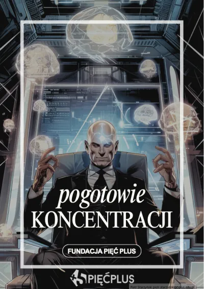
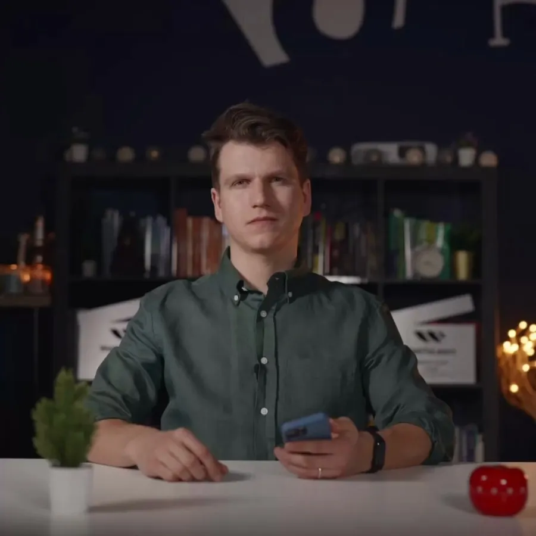
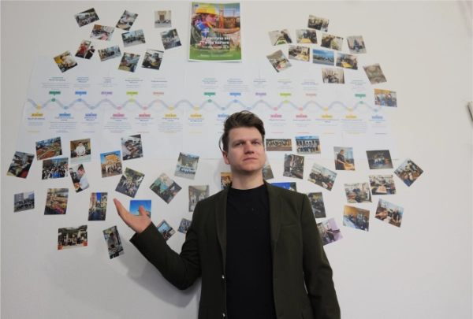

Tylko od porządków w systemie zadania nie robią się same. Robią się od robienia. Szok i niedowierzanie.
Piotr Starzyński, autor kursu
Podczas kursu wypracujesz nawyki i dyscyplinę.
Nawyki zautomatyzują rzeczy, na które niepotrzebnie tracisz swoją cenną uwagę. Z kolei dyscyplina sprawi, że żelazne skupienie podczas pracy z powrotem będzie Twoim ustawieniem fabrycznym.
Odwaliliśmy za Ciebie ciężką robotę
Przejrzeliśmy i przetestowaliśmy niemal wszystkie i wybraliśmy te, które działają...
Szukając w książkach i Internecie znajdziesz miliony metod, tricków i porad. Zapomnij o świszczących mikrofonach, godzinnych wykładach i prezentacjach w PowerPoincie.
Nasz kurs online to:
Krótkie lekcjeKażdą z metod zamknęliśmy w formie krótkiej lekcji, którą obejrzysz na telefonie lub laptopie.
Praktyczne ćwiczeniaPoza lekcjami w kursie znajdziesz skrypt z ćwiczeniami, dzięki któremu każdą z metod zamienisz w działanie, a przecież właśnie o to chodzi, bo od samego słuchania nic się nie zmieni.
Spójność i konsekwencjaKurs jest ułożony tak, aby zacząć od naprawienia najprostszych elementów psujących Twoje skupienie, a potem przejść przez rozwiązania dające długoterminowe efekty.
Metody potwierdzone naukowoW tym kursie nie znajdziesz coachingowego bełkotu o manifestowaniu i afirmacjach. Do każdej lekcji podana jest bibliografia, a wszystkie metody mają działanie potwierdzone uznanymi badaniami naukowymi.
Gotowe do wdrożeniaNa pewno znasz 12-stopniowe schematy zarządzania skrzynką mailową i kalendarzem. My też... i nigdy nie używaliśmy ich dłużej niż tydzień. Dlatego wszystkie metody w tym kursie są proste i możesz zacząć je stosować bez stawiania życia na głowie.
Co otrzymasz w ramach kursu?
45 lekcji i 3 poziomy zaawansowania
Kurs oparliśmy na metaforze szpitala, do którego zabieramy Twoją umiejętność skupienia.
1
Pierwsza pomoc
lekcje 1–13
Proste techniki, które możesz od razu wdrożyć do swojego codziennego życia.
Wprowadzenie
SOR, Rehabilitacja i Medycyna Sportowa
Książeczka zdrowia
Zanim zaczniesz
SOR
Izba przyjęć i wywiad lekarski
Pierwsza pomoc
Tlen
Woda
Budka telefoniczna
Myślodsiewnia
Potęga skakanki
SOR - podsumowanie
2
Rehabilitacja
lekcje 14–31
Techniki bardziej zaawansowane i pozwalające na lepsze skupienie oraz solidna dawka wiedzy teoretycznej.
Rehabilitacja - wstęp
To nie Twoja wina!
Pomodoro
Matrix Cię więzi
Centrowanie
Media niespołecznościowe
Telefon 5.0
Mit multitaskingu
Bezstresowa produktywność
Nowa nadzieja
Czapka czarodzieja
Efekt Mozarta
Sen 2.0
Sen 2.5
Kwarantanna wyszukiwań
Asynchroniczność
Skrzynka z narzędziami
Rehabilitacja - podsumowanie
3
Medycyna sportowa
lekcje 32–45
Techniki, których wprowadzenie poprawi organizację całego Twojego życia.
Medycyna Sportowa - wstęp
Pytanie o wielką żabę
Wstępnie nie
Koncepcja wahadła
Nawykologia - wprowadzenie
Nawykologia #1 - Środowisko
Nawykologia #2 - Daj się uwieść
Nawykologia #3 - Mniej to więcej
Nawykologia #4 - Mała wielka nagroda
Jedz, skup się, biegaj
Poziom energii
Życie w kratki
Medycyna sportowa - podsumowanie
Podsumowanie kursu

Usłyszeć to jedno a zrobić to drugie. Właśnie dlatego w kursie znajdziesz praktyczne ćwiczenia z szablonami w skrypcie.
Próbując zrobić wszystko, nigdy nie zrobisz nic.
Dlatego określanie priorytetów a przede wszystkim trzymanie się ich w codziennej pracy to jedna z kluczowych umiejętności, które opanujesz podczas tego kursu.
Ile kosztuje kurs Pogotowie Koncentracji?
W ramach kursu otrzymujesz:
Roczny dostęp do platformy z lekcjamiNasza platforma jest dostępna na komputerach i urządzeniach mobilnych.
Żelazna 30-dniowa gwarancja zwrotu. Osobiście gwarantuję, że ten kurs działa. Ty piszesz maila, a ja zwracam pieniądze.
blikPłatność BLIKIEM, przelewem lub kartą. Wystawiamy faktury.
Czyli kto będzie Cię uczyć
Piotr Starzyński

Nazywam się Piotr Starzyński i temat skupienia towarzyszy mi od bardzo dawna. Pierwsze planowanie celów zrobiłem sobie w kalendarzu na nadchodzący 2007 rok (byłem wtedy w drugiej gimnazjum).
Ja - wówczas bardzo zajęty i poważny 12 latek szkoliłem się z produktywności, żeby w żadnym wypadku nie marnować czasu. Śmieszne, prawda?
...ale w dorosłym życiu o prawdziwe skupienie jest trudno

łapanie wszystkich srok za ogon
Moje zamiłowanie do robienia wielu na raz rzeczy nie minęło (Rodzina (!), Fundacja Pięć Plus, Firma Władysław Remont, organizowanie praktyk Erasmus+, zespół Igray, Babicka Orkiestra Dęta, pisanie tekstów, kanał na YouTubie, podcast).
Żeby wszystkie te wspaniałe rzeczy (i wiele innych) mogły się wydarzyć potrzebowałem systemu skupienia, który będzie odporny na „całą resztę” - facebooka, instagrama, przeglądanie rolek, newsy, clickbaity, zadania, które ktoś zrzuca mi na głowę oraz... moje własne wspaniałe pomysły z których często wynikało dużo pracy i nic poza tym.
Przeczytałem mnóstwo książek, przetestowałem wszystkie metody znalezione u guru produktywności. Zajęło mi to dwa lata, ale nie żałuję ani chwili, ponieważ mam pewność, że moja koncentracja na rzeczach ważnych jest na najwyższym poziomie.
Ale Ty możesz przejść tę drogę w zaledwie 30 dni...
Od czerwca 2024: ponad 900 zakupów.
923 zakupy z Pogotowiem Koncentracji na platformie kursów od czerwca 2024 do 14.11.2026. Liczymy zakupy, nie osoby.
A to wszystko bez wielkich rewolucji, stopniowo i w sposób uporządkowany, dzięki czemu każda z metod uleży Ci się i stanie się drugą naturą.
Pytania i odpowiedzi
Czy kurs sprawdzi się w moim zawodzie?
Tak! Techniki, które pokazujemy są uniwersalne. Najlepiej stosuje się je w zawodach opierających się na pracy umysłowej za biurkiem, ale osoby pracujące fizycznie też mogą skorzystać co najmniej z niektórych porad.
Na jaki czas wykupuję dostęp do kursu?
Dostęp do wszystkich materiałów otrzymujesz na cały rok. Kurs zajmuje około miesiąca przy 10 minutach dziennie. Wierzymy, że każdy powinien realizować kurs w swoim tempie, a możliwość odświeżenia umiejętności jest bardzo ważna.
Czy możliwy jest zwrot zakupionego kursu?
W ciągu 30 dni od kupna możesz bez konsekwencji zrezygnować z zakupu kursu Pogotowie Koncentracji®. Skontaktuj się z nami przez kontakt@5plus.edu.pl, a pieniądze znajdą się z powrotem na Twoim koncie w ciągu 7 dni roboczych.
W jaki sposób otrzymam kurs?
Dostęp do kursu odbywa się za pośrednictwem naszej platformy. Po założeniu swojego konta otrzymasz dostęp do wszystkich lekcji i skryptu z ćwiczeniami.